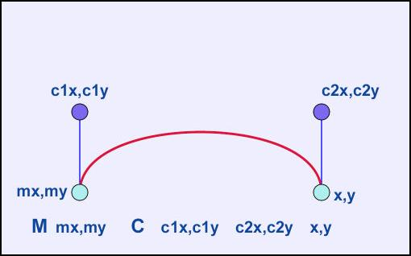
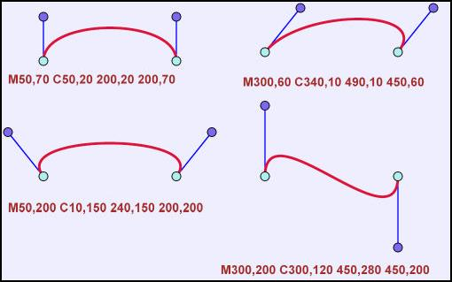
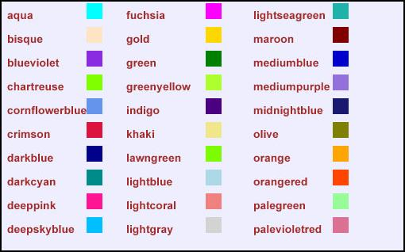

SVG - Scalabre Vector Graphics. Esse formato nada mais é do que um arquivo de texto. Isso mesmo! Um arquivo de texto que podemos abrir em qualquer editor e modificar. Claro que essa modificação deverá respeitar a estrutura de tags do XML e as predefinições do formato, mas o importante é que ele é extremamente acessível. Você pode abri-lo usando um programa com interface gráfica voltada para o desenho rederizado (convertido de texto para gráfico), ou mesmo editá-lo alterando os dados com, por exemplo o Bloco de notas do Windows. O SVG agrada tanto um usuário-padrão desses serviços, que está interessado principalmente na forma visual, como um programador ou gerenciador de servidores que pode lançar mão da alternativa para gerar arquivos mais agradáveis aos olhos (bonitos e bem-feitos) de forma automática, ou seja, criando scripts que geram arquivos sem a intervenção de um usuário.
Jogos? Dá para fazer joguinhos no SVG? Bem, dá para fazer joguinhos cruzando arquivos SVG com Javascript. Pouca gente sabe mas há a possibilidade de animar o SVG. Infelizmente é uma tecnologia nova e pouco suportada por browsers de Internet.
Como ao Javascript é uma tecnologia usada largamente, alguns sábios desenvolvedores principiaram a utilizá la em conjunto com a beleza dos cráficos confeccionados no SVG. Como a quantidade de browsers que abrem arquivos SVG estáticos é muito grande, os joguinhos costuma funcionar em inúmeros deles. Dizem as boas líguas que o SVG será o Flash (SWF) open source.
As linhas de SVG podem ser encaixadas em originais do HTML com o uso do Tag do <embed>, do Tag do <object>, ou do Tag do <iframe>.
Abaixo de você deve ver três métodos diferentes em como encaixar a lima de SVG no HTML page.
O Tag do <embed> é suportado em quase todos os browsers principais, e reserva scripting.
Nota: O visor do adôbe SVG recomenda que você usa o Tag ENCAIXAR ao encaixar SVG no HTML page! Entretanto, se você quiser criar XHTML válido, você não pode usar o <embed> - o Tag do <embed> não é alistado em nenhumas especificações do HTML
Sintaxe:
Nota: O atributo do pluginspage aponta a um URL para o plugin ao download.
Ponta: Sustentação do Internet Explorer um atributo adicional, wmode= " transparente ", que deixou o fundo do HTML page brilhar completamente.
O Tag do <object> é um Tag HTML4 padrão e é suportado em todos os browsers. A desvantagem é que não reserva scripting a língua.
Nota: Se você instalar a versão a mais atrasada do visor do adôbe SVG, as limas de SVG não trabalharão ao usar o Tag do <object>.
Sintaxe:
Nota: Os pontos do atributo do codebase a um URL para que o plugin download
O Tag do <iframe> trabalha em quase todos os browsers.
Sintaxe:
Seria grande se nós poderíamos adicionar elementos de SVG diretamente na linha do HTML, mas isso só é possível no código XML, somente com referência ao namespace de SVG, como este:
| Arquivo: teste.xml |
| <html xmlns="http://www.w3.org/1999/xhtml"> <head> <title>SVG</title> </head> <body> <p style="background-color:#FF0000">This is an HTML paragraph</p> <svg xmlns="http://www.w3.org/2000/svg" width="300" height="100" style="border:solid" version="1.1" > <circle cx="100" cy="50" r="40" stroke="black" stroke-width="2" fill="red" /> </svg> </body> </html> |
| Resultado: |
| Shape | Element | Atributo obrigatório | Attributo opcional |
| Linha | <line> | (nenhum) | x1,y1,x2,y2 |
| Rectangulo | <rect> | width, height | x,y,rx,ry |
| Circulo | <circle> | r | cx,cy |
| Ellipse | <ellipse> | rx,ry | cx,cy |
| Polyline | <polyline> | points | |
| Polygon | <polygon> | points |
<svg xmlns="http://www.w3.org/2000/svg" version="1.1" width="300" height="100" style="border:solid"> |
| embed src="svg/linha.svg" height="110" width="310" type="image/svg+xml" pluginspage="http://www.adobe.com/svg/viewer/install/" > |
| Resultado: |
| <svg xmlns="http://www.w3.org/2000/svg" version="1.1" width="300" height="100" style="border:solid"> <rect x="50" y="10" width="200" height="80" fill="blue" stroke="red" stroke-width="2"/> </svg> |
| <embed src="svg/retangulo.svg" height="110" width="310" type="image/svg+xml" pluginspage="http://www.adobe.com/svg/viewer/install/" ></embed> |
| Resultado: |
| <svg xmlns="http://www.w3.org/2000/svg" version="1.1" width="300" height="100" style="border:solid"> <rect x="50" y="10" width="200" rx="20" height="80" fill="blue" stroke="red" stroke-width="2"/> </svg> |
| <embed src="svg/r_retangulo.svg" height="110" width="310" type="image/svg+xml" pluginspage="http://www.adobe.com/svg/viewer/install/" ></embed> |
| Resultado: |
| <svg xmlns="http://www.w3.org/2000/svg" version="1.1" width="300" height="100" style="border:solid"> <circle cx="150" cy="50" r="45" fill="blue" stroke="red" stroke-width="2"/> </svg> |
| <embed src="svg/circulo.svg" height="110" width="310" type="image/svg+xml" pluginspage="http://www.adobe.com/svg/viewer/install/" ></embed> |
| Resultado: |
| <svg xmlns="http://www.w3.org/2000/svg" version="1.1" width="300" height="100" style="border:solid"> <ellipse cx="150" cy="50" ry="45" rx="100" fill="blue" stroke="red" stroke-width="2"/> </svg> |
| <embed src="svg/elipse.svg" height="110" width="310" type="image/svg+xml" pluginspage="http://www.adobe.com/svg/viewer/install/" ></embed> |
| Resultado: |
| <svg xmlns="http://www.w3.org/2000/svg" version="1.1" width="300" height="100" style="border:solid"> <polyline points="10,10 90,90 180,10 270,90" fill="none" stroke="red" stroke-width="2"/> </svg> |
| <embed src="svg/polylinhas.svg" height="110" width="310" type="image/svg+xml" pluginspage="http://www.adobe.com/svg/viewer/install/" ></embed> |
| Resultado: |
| <svg xmlns="http://www.w3.org/2000/svg" version="1.1" width="300" height="100" style="border:solid"> <polygon points="150,10 10,50 150,90 270,50 150,10" fill="blue" stroke="red" stroke-width="2"/> </svg> |
| <embed src="svg/poligono.svg" height="110" width="310" type="image/svg+xml" pluginspage="http://www.adobe.com/svg/viewer/install/" ></embed> |
| Resultado: |
| <svg xmlns="http://www.w3.org/2000/svg" version="1.1" width="300" height="100" style="border:solid"> <path d="M100 80 L200 80 L150 20 Z" fill="green" stroke="red" stroke-width="5" /> </svg> |
| <embed src="svg/path.svg" height="110" width="310" type="image/svg+xml" pluginspage="http://www.adobe.com/svg/viewer/install/" ></embed> |
| Resultado: |
textpadth
| <svg xmlns="http://www.w3.org/2000/svg" xmlns:xlink="http://www.w3.org/1999/xlink" version="1.1" width="300" height="100" style="border:solid"> <path id="duck" d="M20 20 L20 80 L100 80 L100 20 L200 20 L200 80 L280 80" fill="none" stroke="none"/> <text style="font-size:10"> <textPath xlink:href="#duck"> We go up, then we go down, then up again around his head. Now we are upside down as we go round his neck and along the bottom to the tail. </textPath> </text> </svg> |
| <embed src="svg/textpath.svg" height="110" width="310" type="image/svg+xml" pluginspage="http://www.adobe.com/svg/viewer/install/" ></embed> |
| Resultado: |
Curva


| Curva 1 |
| <svg xmlns="http://www.w3.org/2000/svg" version="1.1" width="300" height="100" style="border:solid"> <path d="M20,80 C 20,-20 280,-20 280,80" fill="none" stroke="red" stroke-width="5" /> </svg> |
| Curva 2 |
| <svg xmlns="http://www.w3.org/2000/svg" version="1.1" width="300" height="100" style="border:solid"> <path d="M20,80 C 60,20 320,-20 280,80" fill="none" stroke="red" stroke-width="5" /> </svg> |
| Curva 3 |
| <svg xmlns="http://www.w3.org/2000/svg" version="1.1" width="300" height="100" style="border:solid"> <path d="M20,80 C -40,-10 340,-10 280,80" fill="none" stroke="red" stroke-width="5" /> </svg> |
| Curva 4 |
| <svg xmlns="http://www.w3.org/2000/svg" version="1.1" width="300" height="100" style="border:solid"> <path d="M20,50 C 20,-60 280,160 280,50" fill="none" stroke="red" stroke-width="5" /> </svg> |
fill-rule
| Normal |
| <svg xmlns="http://www.w3.org/2000/svg" version="1.1" width="300" height="150" style="border:solid"> <path d="M 24,88 L 65,6 L 107,88 z M 20,32 L 112,32 L 61,108 z" fill="green" stroke="red" stroke-width="5" /> </svg> |
| fill-rule="evenodd" |
| <svg xmlns="http://www.w3.org/2000/svg" version="1.1" width="300" height="150" style="border:solid"> <g fill-rule="evenodd"> <path d="M 24,88 L 65,6 L 107,88 z M 20,32 L 112,32 L 61,108 z" fill="green" stroke="red" stroke-width="5" /> </g> </svg> |
| fill-rule="nonzero" |
| <svg xmlns="http://www.w3.org/2000/svg" version="1.1" width="300" height="150" style="border:solid"> <g fill-rule="nonzero"> <path d="M 24,88 L 65,6 L 107,88 z M 20,32 L 112,32 L 61,108 z" fill="green" stroke="red" stroke-width="5" /> </g> </svg> |
| <svg xmlns="http://www.w3.org/2000/svg" version="1.1" width="300" height="100" style="border:solid"> <text x="40" y="50" font-family="courier new" font-size="40" fill="red" stroke="red" stroke-width="5"> Hello SVG! </text> </svg> |
| <embed src="svg/texto.svg" height="110" width="310" type="image/svg+xml" pluginspage="http://www.adobe.com/svg/viewer/install/" ></embed> |
| Resultado: |
| <svg xmlns="http://www.w3.org/2000/svg" version="1.1" width="300" height="100" style="border:solid"> <text x="40" y="50" font-family="courier new" font-size="20" fill="black" stroke-width="2"> Texto <tspan font-size="40" fill="red"> Texto </tspan> </text> </svg> |
| <embed src="svg/tspan.svg" height="110" width="310" type="image/svg+xml" pluginspage="http://www.adobe.com/svg/viewer/install/" ></embed> |
| Resultado: |
2º Exemplo
| <svg xmlns="http://www.w3.org/2000/svg" version="1.1" width="300" height="100" style="border:solid"> <text x="10" y="1"> <tspan x="10" dy="18">This is multi-line</tspan> <tspan x="10" dy="18">text or text</tspan> <tspan x="10" dy="18">with different properties</tspan> <tspan x="10" dy="18">that can be produced</tspan> <tspan x="10" dy="18">using the tspan element</tspan> </text> </svg> |
| <embed src="svg/texto2.svg" height="110" width="310" type="image/svg+xml" pluginspage="http://www.adobe.com/svg/viewer/install/" ></embed> |
| Resultado: |
font-family
| <svg xmlns="http://www.w3.org/2000/svg" version="1.1" width="300" height="100" style="border:solid"> <text x="10" y="1"> <tspan x="10" dy="18" font-family="courier">Courier</tspan> <tspan x="10" dy="18" font-family="helvetical">Helvetical</tspan> </text> </svg> |
| <embed src="svg/font_family.svg" height="110" width="310" type="image/svg+xml" pluginspage="http://www.adobe.com/svg/viewer/install/" ></embed> |
| Resultado: |
font-size
| <svg xmlns="http://www.w3.org/2000/svg" version="1.1" width="300" height="100" style="border:solid"> <text x="10" y="1"> <tspan x="10" dy="20" font-size="20">20</tspan> <tspan x="10" dy="40" font-size="40">40</tspan> </text> </svg> |
| <embed src="svg/font_size.svg" height="110" width="310" type="image/svg+xml" pluginspage="http://www.adobe.com/svg/viewer/install/" ></embed> |
| Resultado: |
font-style
| <svg xmlns="http://www.w3.org/2000/svg" version="1.1" width="300" height="100" style="border:solid"> <text x="10" y="1"> <tspan x="10" dy="18" font-style="normal">Normal</tspan> <tspan x="10" dy="18" font-style="italic">Italic</tspan> <tspan x="10" dy="18" font-style="oblique">Oblique</tspan> </text> </svg> |
| <embed src="svg/font_style.svg" height="110" width="310" type="image/svg+xml" pluginspage="http://www.adobe.com/svg/viewer/install/" ></embed> |
| Resultado: |
font-weight
| <svg xmlns="http://www.w3.org/2000/svg" version="1.1" width="300" height="100" style="border:solid"> <text x="10" y="1"> <tspan x="10" dy="18" font-weight="normal">Normal</tspan> <tspan x="10" dy="18" font-weight="bold">Bold</tspan> <tspan x="10" dy="18" font-weight="100">100</tspan> <tspan x="10" dy="18" font-weight="900">900</tspan> </text> </svg> |
| <embed src="svg/font_weight.svg" height="110" width="310" type="image/svg+xml" pluginspage="http://www.adobe.com/svg/viewer/install/" ></embed> |
| Resultado: |
text-decoration
| <svg xmlns="http://www.w3.org/2000/svg" version="1.1" width="300" height="100" style="border:solid"> <text x="10" y="1"> <tspan x="10" dy="18" text-decoration="none">None</tspan> <tspan x="10" dy="18" text-decoration="underline">Underline</tspan> <tspan x="10" dy="18" text-decoration="line-through">Line-Through</tspan> <tspan x="10" dy="18" text-decoration="overline">Overline</tspan> </text> </svg> |
| <embed src="svg/text_decoration.svg" height="110" width="310" type="image/svg+xml" pluginspage="http://www.adobe.com/svg/viewer/install/" ></embed> |
| Resultado: |
fill
| <svg xmlns="http://www.w3.org/2000/svg" version="1.1" width="300" height="100" style="border:solid"> <text x="10" y="1"> <tspan x="10" dy="18" fill="red">Red</tspan> <tspan x="10" dy="18" fill="green">Green</tspan> </text> </svg> |
| <embed src="svg/fill.svg" height="110" width="310" type="image/svg+xml" pluginspage="http://www.adobe.com/svg/viewer/install/" ></embed> |
| Resultado: |
stroke
| <svg xmlns="http://www.w3.org/2000/svg" version="1.1" width="300" height="100" style="border:solid"> <text x="10" y="1"> <tspan x="10" dy="40" font-size="40" font-weight="bold" stroke="red">Red</tspan> <tspan x="10" dy="40" font-size="40" font-weight="bold" stroke="green">Green</tspan> </text> </svg> |
| <embed src="svg/stroke2.svg" height="110" width="310" type="image/svg+xml" pluginspage="http://www.adobe.com/svg/viewer/install/" ></embed> |
| Resultado: |
Baseline-shift
| <svg xmlns="http://www.w3.org/2000/svg" version="1.1" width="300" height="100" style="border:solid"> <text x="10" y="18"> x <tspan style="baseline-shift:super">super</tspan> +y <tspan style="baseline-shift:sub">sub</tspan> +1 </text> </svg> |
| <embed src="svg/baseline_shift.svg" height="110" width="310" type="image/svg+xml" pluginspage="http://www.adobe.com/svg/viewer/install/" ></embed> |
| Resultado: |
rotate
| <svg xmlns="http://www.w3.org/2000/svg" version="1.1" width="300" height="100" style="border:solid"> <text x="10" y="18"> <tspan x="20" dy="30" rotate="10 20 30 40 0 50 60 70 0 80 90 0 100 110 120 140 150 160 170 180">that can be produced</tspan> </text> </svg> |
| <embed src="svg/rotate.svg" height="110" width="310" type="image/svg+xml" pluginspage="http://www.adobe.com/svg/viewer/install/" ></embed> |
| Resultado: |
| <svg xmlns="http://www.w3.org/2000/svg" xmlns:xlink="http://www.w3.org/1999/xlink" version="1.1" width="300" height="100" style="border:solid"> <image xlink:href="anime.jpg" x="10" y="10" width="280" height="80"/> </svg> |
| <embed src="svg/imagem.svg" height="110" width="310" type="image/svg+xml" pluginspage="http://www.adobe.com/svg/viewer/install/" ></embed> |
| Resultado: |
| <svg xmlns="http://www.w3.org/2000/svg" xmlns:xlink="http://www.w3.org/1999/xlink" version="1.1" width="300" height="100" style="border:solid"> <image xlink:href="anime.jpg" transform="scale(1,-1)" x="10" y="-90" width="280" height="80"/> </svg> |
| <embed src="svg/inverter_horiz.svg" height="110" width="310" type="image/svg+xml" pluginspage="http://www.adobe.com/svg/viewer/install/" ></embed> |
| Resultado: |
| <svg xmlns="http://www.w3.org/2000/svg" xmlns:xlink="http://www.w3.org/1999/xlink" version="1.1" width="300" height="100" style="border:solid"> <image xlink:href="anime.jpg" transform="scale(-1,1)" x="-290" y="10" width="280" height="80"/> </svg> |
| <embed src="svg/inverter_vert.svg" height="110" width="310" type="image/svg+xml" pluginspage="http://www.adobe.com/svg/viewer/install/" ></embed> |
| Resultado: |
| <svg xmlns="http://www.w3.org/2000/svg" xmlns:xlink="http://www.w3.org/1999/xlink" version="1.1" width="300" height="100" style="border:solid"> <image xlink:href="anime.jpg" transform="scale(-1,-1)" x="-290" y="-90" width="280" height="80"/> </svg> |
| <embed src="svg/inverter_horiz_vert.svg" height="110" width="310" type="image/svg+xml" pluginspage="http://www.adobe.com/svg/viewer/install/" ></embed> |
| Resultado: |

| <svg xmlns="http://www.w3.org/2000/svg" version="1.1" width="300" height="100" style="border:solid"> <rect x="10" y="10" width="10" height="10" style="fill:coral" /> <rect x="30" y="10" width="10" height="10" style="fill:rgb(255,27,180)" /> <rect x="50" y="10" width="10" height="10" style="fill:#456" /> <rect x="70" y="10" width="10" height="10" style="fill:#CC00CC" /> </svg> |
| <embed src="svg/cores.svg" height="110" width="310" type="image/svg+xml" pluginspage="http://www.adobe.com/svg/viewer/install/" ></embed> |
| Resultado: |
| <svg xmlns="http://www.w3.org/2000/svg" version="1.1" width="300" height="100" style="border:solid"> <rect x="50" y="10" width="200" height="80" stroke="red" stroke-width="10" stroke-dasharray="10, 10" fill="green" opacity="0.5"/> </svg> |
| <embed src="svg/stoke.svg" height="110" width="310" type="image/svg+xml" pluginspage="http://www.adobe.com/svg/viewer/install/" ></embed> |
| Resultado: |
| <svg xmlns="http://www.w3.org/2000/svg" version="1.1" width="350" height="200" style="border:solid"> <line x1="10" y1="10" x2="330" y2="10" style="stroke:black; stroke-width:5;" /> <line x1="10" y1="50" x2="330" y2="50" style="stroke:blue; stroke-width:10;" /> <line x1="10" y1="90" x2="330" y2="90" style="stroke:red; stroke-width:10; stroke-dasharray: 10" /> <line x1="10" y1="130" x2="330" y2="130" style="stroke:green; stroke-width:5; stroke-dasharray: 10,2; fill: none;" /> <line x1="10" y1="170" x2="330" y2="170" style="stroke:yellow; stroke-width:20; stroke-dasharray: 10,2,10; fill: none;" /> </svg> |
| embed src="svg/line_stoke.svg" height="210" width="360" type="image/svg+xml" pluginspage="http://www.adobe.com/svg/viewer/install/" ></embed> |
| Resultado: |
| <svg xmlns="http://www.w3.org/2000/svg" xmlns:xlink="http://www.w3.org/1999/xlink" version="1.1" width="300" height="100" style="border:solid"> <a xlink:href="http://www.w3.org"> <rect x="30" y="30" width="200" height="40" fill="yellow" stroke="red" stroke-width="2" /> <text x="130" y="60" style="text-anchor:middle">My button</text> </a> </svg> |
| <embed src="svg/link.svg" height="110" width="310" type="image/svg+xml" pluginspage="http://www.adobe.com/svg/viewer/install/" ></embed> |
| Resultado: |
| <svg xmlns="http://www.w3.org/2000/svg" xmlns:xlink="http://www.w3.org/1999/xlink" version="1.1" width="300" height="100" style="border:solid"> <defs> <rect id="rect" width="15" height="15" fill="red"/> </defs> <use x="5" y="5" xlink:href="#rect"/> <use x="30" y="30" xlink:href="#rect"/> </svg> |
| <embed src="svg/recursos.svg" height="110" width="310" type="image/svg+xml" pluginspage="http://www.adobe.com/svg/viewer/install/" ></embed> |
| Resultado: |
| <svg xmlns="http://www.w3.org/2000/svg" version="1.1" width="300" height="100" style="border:solid"> <g fill="blue" stroke="red" stroke-width="2"> <rect x="50" y="10" width="100" height="40"/> <rect x="150" y="50" width="100" height="40"/> </g> </svg> |
| <embed src="svg/ggg.svg" height="110" width="310" type="image/svg+xml" pluginspage="http://www.adobe.com/svg/viewer/install/" ></embed> |
| Resultado: |
| <svg xmlns="http://www.w3.org/2000/svg" version="1.1" width="300" height="100" style="border:solid"> <rect x="50" y="10" width="200" height="80" style="fill:blue; stroke:red; stroke-width:2"/> </svg> |
| <embed src="svg/texto.svg" height="110" width="310" type="image/svg+xml" pluginspage="http://www.adobe.com/svg/viewer/install/" ></embed> |
| Resultado: |
| <svg xmlns="http://www.w3.org/2000/svg" version="1.1" width="300" height="100" style="border:solid"> <style type="text/css"> <![CDATA[ #amarelo { fill: yellow; stroke: green; stroke-width: 10; } ]]> </style> <rect x="50" y="10" width="200" height="80" id="amarelo"/> </svg> |
| <embed src="svg/style2.svg" height="110" width="310" type="image/svg+xml" pluginspage="http://www.adobe.com/svg/viewer/install/" ></embed> |
| Resultado: |
| Arquivo: mystyle.svg |
| <?xml-stylesheet type="text/css" href="mystyle.css" ?> <svg xmlns="http://www.w3.org/2000/svg" version="1.1" width="300" height="100" style="border:solid"> <rect x="50" y="10" width="200" height="80" id="verde"/> </svg> |
| Arquivo: mystyle.css |
| #verde { fill: green; stroke: blue; stroke-width: 10; } |
| <embed src="svg/mystyle.svg" height="110" width="310" type="image/svg+xml" pluginspage="http://www.adobe.com/svg/viewer/install/" ></embed> |
| Resultado: |
| <svg xmlns="http://www.w3.org/2000/svg" version="1.1" width="300" height="100" style="border:solid"> <!-- ************** Comentario ******************** --> <!-- ************** Exemplo ******************** --> <rect x="50" y="10" width="200" height="80" fill="green"/> </svg> |
| <embed src="svg/comentarios.svg" height="110" width="310" type="image/svg+xml" pluginspage="http://www.adobe.com/svg/viewer/install/" ></embed> |
| Resultado: |
| <svg xmlns="http://www.w3.org/2000/svg" version="1.1" width="300" height="100" style="border:solid"> <rect x="80" y="40" width="100" height="40" fill="yellow" stroke="red" stroke-width="10"/> <rect x="120" y="20" width="100" height="40" fill="blue" opacity="0.5" stroke="green" stroke-width="10"/> </svg> |
| <embed src="svg/ggg.svg" height="110" width="310" type="image/svg+xml" pluginspage="http://www.adobe.com/svg/viewer/install/" ></embed> |
| Resultado: |
SVG Linear
| <svg xmlns="http://www.w3.org/2000/svg" version="1.1" width="300" height="100" style="border:solid"> <linearGradient id="g1" gradientUnits="userSpaceOnUse" x1="50" y1="10" x2="250" y2="90"> <stop offset="0" style="stop-color:blue" /> <stop offset="0.5" style="stop-color:yellow" /> <stop offset="1" style="stop-color:red" /> </linearGradient> <rect x="50" y="10" width="200" height="80" fill="url(#g1)" stroke="red" stroke-width="2"/> </svg> |
| <embed src="svg/linear.svg" height="110" width="310" type="image/svg+xml" pluginspage="http://www.adobe.com/svg/viewer/install/" ></embed> |
| Resultado: |
SVG Radial
| <svg xmlns="http://www.w3.org/2000/svg" version="1.1" width="300" height="100" style="border:solid"> <radialGradient id="g2" gradientUnits="userSpaceOnUse" cx="150" cy="50" r="80" fx="180" fy="80" > <stop offset="0" style="stop-color:blue" /> <stop offset=".5" style="stop-color:yellow" /> <stop offset="1" style="stop-color:red" /> <stop offset="1.5" style="stop-color:green" /> </radialGradient> <rect x="50" y="10" width="200" height="80" fill="url(#g2)" stroke="blue" stroke-width="2"/> </svg> |
| <embed src="svg/radial.svg" height="110" width="310" type="image/svg+xml" pluginspage="http://www.adobe.com/svg/viewer/install/" ></embed> |
| Resultado: |
| <svg xmlns="http://www.w3.org/2000/svg" xmlns:xlink="http://www.w3.org/1999/xlink" version="1.1" width="500" height="500" style="border:solid"> <clipPath id="cp1"> <circle cx="250" cy="250" r="180"/> </clipPath> <image xlink:href="anime.jpg" x="0" y="0" width="500" height="500" clip-path="url(#cp1)"/> </svg> |
| <embed src="svg/recortar.svg" height="510" width="510" type="image/svg+xml" pluginspage="http://www.adobe.com/svg/viewer/install/" ></embed> |
| Resultado: |
<g transform="translate(x,y)"> .... </g>
| <svg xmlns="http://www.w3.org/2000/svg" version="1.1" width="300" height="100" style="border:solid"> <g transform="translate(150 50)"> <rect width="15" height="15" fill="red"/> </g> </svg> |
| <embed src="svg/translate.svg" height="110" width="310" type="image/svg+xml" pluginspage="http://www.adobe.com/svg/viewer/install/" ></embed> |
| Resultado: |
<g transform="rotate(angle)"> .... </g>
| <svg xmlns="http://www.w3.org/2000/svg" version="1.1" width="300" height="100" style="border:solid"> <g transform="translate(145 15) rotate(45)"> <rect width="50" height="50" fill="blue" stroke="red" stroke-width="2"/> </g> </svg> |
| <embed src="svg/rotacao.svg" height="110" width="310" type="image/svg+xml" pluginspage="http://www.adobe.com/svg/viewer/install/" ></embed> |
| Resultado: |
<g transform="rotate(angle, ox, oy)"> .... </g>
<g transform="scale(sxy)"> .... </g>
| <svg xmlns="http://www.w3.org/2000/svg" version="1.1" width="300" height="100" style="border:solid"> <g transform="translate(5 5) scale(1)"> <rect width="10" height="10" fill="red"/> </g> <g transform="translate(20 5) scale(2)"> <rect width="10" height="10" fill="red"/> </g> <g transform="translate(45 5) scale(3)"> <rect width="10" height="10" fill="red"/> </g> <g transform="translate(80 5) scale(4)"> <rect width="10" height="10" fill="red"/> </g> </svg> |
| <embed src="svg/scale.svg" height="110" width="310" type="image/svg+xml" pluginspage="http://www.adobe.com/svg/viewer/install/" ></embed> |
<g transform="scale(sx,sy)"> .... </g>
Normal
| <svg xmlns="http://www.w3.org/2000/svg" xmlns:xlink="http://www.w3.org/1999/xlink" version="1.1" width="300" height="100" style="border:solid"> <image xlink:href="anime.jpg" x="10" y="10" width="280" height="80"/> </svg> |
| <embed src="svg/imagem.svg" height="110" width="310" type="image/svg+xml" pluginspage="http://www.adobe.com/svg/viewer/install/" ></embed> |
| Resultado: |
Esticar Horizontalmente
| <svg xmlns="http://www.w3.org/2000/svg" xmlns:xlink="http://www.w3.org/1999/xlink" version="1.1" width="400" height="100" style="border:solid"> <g transform="scale(3, 1)"> <image xlink:href="anime.jpg" x="-80" y="10" width="280" height="80"/> </g> </svg> |
| <embed src="svg/scale2.svg" width="410" height="110" type="image/svg+xml" pluginspage="http://www.adobe.com/svg/viewer/install/" ></embed> |
| Resultado: |
Esticar Verticalmente
| <svg xmlns="http://www.w3.org/2000/svg" xmlns:xlink="http://www.w3.org/1999/xlink" version="1.1" width="120" height="300" style="border:solid"> <g transform="scale(1, 3)"> <image xlink:href="anime.jpg" x="-80" y="10" width="280" height="80"/> </g> </svg> |
| <embed src="svg/scale3.svg" width="130" height="310" type="image/svg+xml" pluginspage="http://www.adobe.com/svg/viewer/install/" ></embed> |
| Resultado: |
<g transform="skewX(angle)"> .... </g>
| <svg xmlns="http://www.w3.org/2000/svg" version="1.1" width="300" height="100" style="border:solid"> <g transform="translate(100 15) skewX(30)"> <rect width="50" height="50" fill="blue" stroke="red" stroke-width="2"/> </g> </svg> |
| <embed src="svg/skewx.svg" height="110" width="310" type="image/svg+xml" pluginspage="http://www.adobe.com/svg/viewer/install/" ></embed> |
| Resultado: |
<g transform="skewY(angle)"> .... </g>
| <svg xmlns="http://www.w3.org/2000/svg" version="1.1" width="300" height="100" style="border:solid"> <g transform="translate(100 15) skewY(30)"> <rect width="50" height="50" fill="blue" stroke="red" stroke-width="2"/> </g> </svg> |
| <embed src="svg/skewy.svg" height="110" width="310" type="image/svg+xml" pluginspage="http://www.adobe.com/svg/viewer/install/" ></embed> |
| Resultado: |
| <svg xmlns="http://www.w3.org/2000/svg" version="1.1" width="250" height="250"> <script language="JavaScript"> <![CDATA[ function circle_click() { var circle = document.getElementById("circulo"); var raio = circle.getAttribute("r"); if (raio == 50) { circle.setAttribute("r", 100); } else { circle.setAttribute("r", 50); } } ]]> </script> <rect x="1" y="1" width="248" height="248" fill="none" stroke="blue"/> <circle onclick="circle_click()" id="circulo" cx="125" cy="125" r="50" fill="red"/> <text id="texto" x="15" y="20" font-family="Verdana" font-size="15">SVG</text> <text x="15" y="240" font-family="Verdana" font-size="15">Clique no circulo</text> </svg> |
| <embed src="svg/atributo.svg" height="250" width="250" type="image/svg+xml" pluginspage="http://www.adobe.com/svg/viewer/install/" ></embed> |
| Resultado: |
| <svg xmlns="http://www.w3.org/2000/svg" version="1.1" width="250" height="250"> <script language="javascript"> <![CDATA[ function circle_click() { var circle = document.getElementById("circulo"); var opacidade = circle.style.opacity; if (opacidade == 1) { circle.style.opacity = 0.3; } else { circle.style.opacity = 1; } } ]]> </script> <rect x="1" y="1" width="248" height="248" fill="none" stroke="blue"/> <circle onclick="circle_click()" id="circulo" cx="125" cy="125" r="50" style="opacity:1" fill="red"/> <text id="texto" x="15" y="20" font-family="Verdana" font-size="15">SVG</text> <text x="15" y="240" font-family="Verdana" font-size="15">Clique no circulo</text> </svg> |
| <embed src="svg/opacidade.svg" height="250" width="250" type="image/svg+xml" pluginspage="http://www.adobe.com/svg/viewer/install/" ></embed> |
| Resultado: |
| <svg xmlns="http://www.w3.org/2000/svg" version="1.1" width="250" height="250"> <script language="JavaScript"> <![CDATA[ function circle_click() { var txt = document.getElementById("texto"); var texto = txt.firstChild.nodeValue; if (texto == "SVG") { txt.firstChild.nodeValue = "Teste"; } else { txt.firstChild.nodeValue = "SVG"; } } ]]> </script> <rect x="1" y="1" width="248" height="248" fill="none" stroke="blue"/> <circle onclick="circle_click()" id="circulo" cx="125" cy="125" r="50" fill="red"/> <text id="texto" x="15" y="20" font-family="Verdana" font-size="15">SVG</text> <text x="15" y="240" font-family="Verdana" font-size="15">Clique no circulo</text> </svg> |
| <embed src="svg/value.svg" height="250" width="250" type="image/svg+xml" pluginspage="http://www.adobe.com/svg/viewer/install/" ></embed> |
| Resultado: |
| <svg xmlns="http://www.w3.org/2000/svg" version="1.1" width="250" height="250"> <style type="text/css"> <![CDATA[ .vermelho { fill: red; stroke: blue; stroke-width: 5; } .azul { fill: blue; stroke: green; stroke-width: 10; } ]]> </style> <script language="JavaScript"> <![CDATA[ function circle_click() { var circle = document.getElementById("circulo"); var classe = circle.className.baseVal; if (classe == "vermelho") { circle.className.baseVal = "azul"; } else { circle.className.baseVal = "vermelho"; } } ]]> </script> <rect x="1" y="1" width="248" height="248" fill="none" stroke="blue"/> <circle onclick="circle_click()" id="circulo" cx="125" cy="125" r="50" fill="red"/> <text id="texto" x="15" y="20" font-family="Verdana" font-size="15">SVG</text> <text x="15" y="240" font-family="Verdana" font-size="15">Clique no circulo</text> </svg> |
| <embed src="svg/classe.svg" height="250" width="250" type="image/svg+xml" pluginspage="http://www.adobe.com/svg/viewer/install/" ></embed> |
| Resultado: |
| <svg xmlns="http://www.w3.org/2000/svg" version="1.1" width="250" height="250"> <style type="text/css"> <![CDATA[ .visivelX { visibility: visible; } .invisivelX { visibility: hidden; } ]]> </style> <script language="JavaScript"> <![CDATA[ function circle_click() { var circle = document.getElementById("circulo"); var classe = circle.className.baseVal; if (classe == "visivelX") { circle.className.baseVal = "invisivelX"; } else { circle.className.baseVal = "visivelX"; } } ]]> </script> <rect x="1" y="1" width="248" height="248" fill="none" stroke="blue"/> <circle onclick="circle_click()" cx="125" cy="125" r="50" fill="red"/> <circle id="circulo" class="visivelX" cx="25" cy="25" r="20" fill="green"/> <text x="15" y="240" font-family="Verdana" font-size="15">Clique no circulo</text> </svg> |
| <embed src="svg/invisivel.svg" height="250" width="250" type="image/svg+xml" pluginspage="http://www.adobe.com/svg/viewer/install/" ></embed> |
| Resultado: |
<svg function makeShape(evt) { |
| <embed src="svg/funcao.svg" height="110" width="310" type="image/svg+xml" pluginspage="http://www.adobe.com/svg/viewer/install/" ></embed> |
| Resultado: |
XML - HTML
| Arquivo: svg.xml |
<html <head> <body> <h1> XHTML, SVG, CSS e DOM </h1> <svg:svg width="350" height="250"> <svg:circle id="circle" cx="100" cy="150" r="90" fill="#F00" class="normal" /> <svg:path d="M 80,110 L 80,170" /> <svg:path d="M 40,170 C 50,230 150,230 160,170" /> <svg:rect class="balao" x="140" y="10" rx="15" ry="15" width="200" height="100" /> </svg:svg> <p> <script type="text/javascript"> </body> |
Eventos
OnClick
| <svg xmlns="http://www.w3.org/2000/svg" version="1.1" width="250" height="250"> <script language="JavaScript"> <![CDATA[ function circle_click() { var circle = document.getElementById("circulo"); var raio = circle.getAttribute("r"); if (raio == 50) { circle.setAttribute("r", 100); } else { circle.setAttribute("r", 50); } } ]]> </script> <rect x="1" y="1" width="248" height="248" fill="none" stroke="blue"/> <circle onclick="circle_click()" id="circulo" cx="125" cy="125" r="50" fill="red"/> <text id="texto" x="15" y="20" font-family="Verdana" font-size="15">SVG</text> <text x="15" y="240" font-family="Verdana" font-size="15">Clique no circulo</text> </svg> |
| <embed src="svg/atributo.svg" height="250" width="250" type="image/svg+xml" pluginspage="http://www.adobe.com/svg/viewer/install/" ></embed> |
| Resultado: |
MouseOver MouseOut
| <svg xmlns="http://www.w3.org/2000/svg" version="1.1" width="250" height="250"> <script language="JavaScript"> <![CDATA[ function circle_mouse(valor) { var texto = document.getElementById("texto"); if(valor == true){ texto.firstChild.nodeValue = "Mouse Over"; } else { texto.firstChild.nodeValue = "Mouse Out"; } } ]]> </script> <rect x="1" y="1" width="248" height="248" fill="none" stroke="blue"/> <circle onmouseover="circle_mouse(true)" onmouseout="circle_mouse(false)" id="circulo" cx="125" cy="125" r="50" fill="red"/> <text id="texto" x="15" y="20" font-family="Verdana" font-size="15">SVG</text> <text x="15" y="240" font-family="Verdana" font-size="15">Clique no circulo</text> </svg> |
| <embed src="svg/mouse.svg" height="250" width="250" type="image/svg+xml" pluginspage="http://www.adobe.com/svg/viewer/install/" ></embed> |
| Resultado: |
Mousemove
| <svg xmlns="http://www.w3.org/2000/svg" version="1.1" width="250" height="250"> <script language="JavaScript"> <![CDATA[ function rect_mouse(evt) { var texto1 = document.getElementById("texto1"); var texto2 = document.getElementById("texto2"); texto1.firstChild.nodeValue = "screenX="+evt.screenX+", screenY="+evt.screenY; texto2.firstChild.nodeValue = "clientX="+evt.clientX+", clientY="+evt.clientY; } ]]> </script> <rect x="1" y="1" width="248" height="248" fill="none" stroke="blue"/> <rect x="75" y="75" width="100" height="100" onmousemove="rect_mouse(evt)" fill="red"/> <text id="texto1" x="15" y="20" font-family="Verdana" font-size="15">screen</text> <text id="texto2" x="15" y="40" font-family="Verdana" font-size="15">client</text> <text x="15" y="240" font-family="Verdana" font-size="15">Clique no quadrado</text> </svg> |
| <embed src="svg/cursor.svg" height="250" width="250" type="image/svg+xml" pluginspage="http://www.adobe.com/svg/viewer/install/" ></embed> |
| Resultado: |
Teclado
<svg xmlns="http://www.w3.org/2000/svg" version="1.1" width="250" height="250"> var typeInitialized = false; function typeText(evt) { if (evt.charCode) { var texto1 = document.getElementById("texto1"); ]]> </script> |
| <embed src="svg/tecla.svg" height="250" width="250" type="image/svg+xml" pluginspage="http://www.adobe.com/svg/viewer/install/" ></embed> |
| Resultado: |
Clicar e Arrastar
<svg xmlns="http://www.w3.org/2000/svg" version="1.1" width="250" height="250" onmousedown="desenhar_down(evt)" onmousemove="desenhar_move(evt)" onmouseup="desenhar_up(evt)"> |
| <embed src="svg/desenhar.svg" height="250" width="250" type="image/svg+xml" pluginspage="http://www.adobe.com/svg/viewer/install/" ></embed> |
| Resultado: |